Habitación principal
Para dormir hasta tarde y despertar sin ruido. El tipo de cama y la ropa de cama se confirman al consultar.
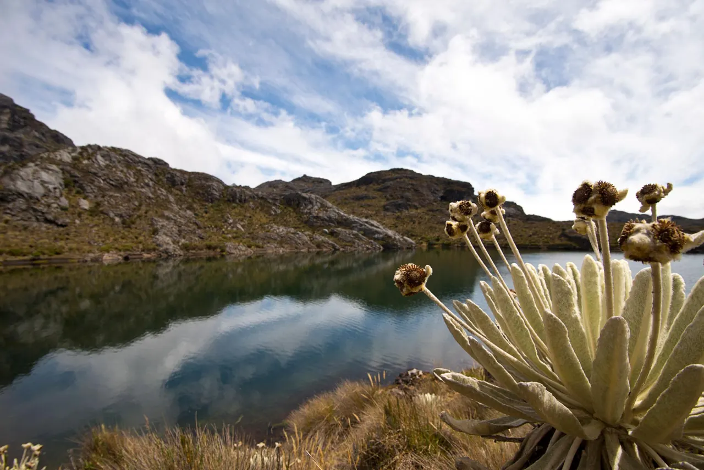
Berlín · Santander · Colombia
Tres habitaciones y una chimenea en Berlín, Tona, para descansar, compartir con los tuyos y salir a conocer el páramo y las montañas de Santander.
Paisaje de referencia, lugar por confirmar
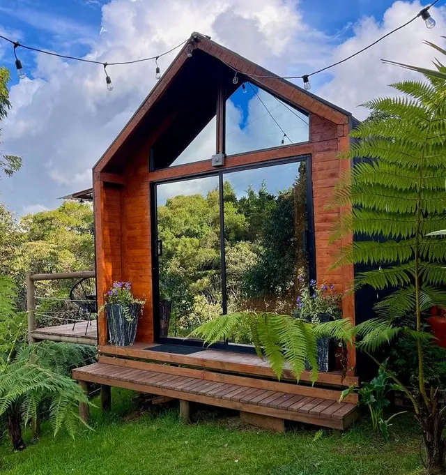
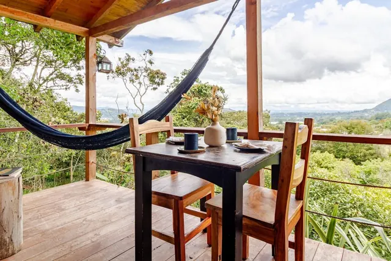
Las Tres Marías es para quienes llegan cansados de la ciudad y quieren tiempo: para dormir sin despertador, conversar sin mirar el reloj y salir a caminar cuando la niebla se levanta.
Está en Berlín, corregimiento de Tona (Santander), y tiene tres habitaciones, dos baños, sala, comedor, cocina, chimenea, patio y balcón, Wi-Fi y parqueadero para dos vehículos. Es un punto de partida tranquilo para conocer la alta montaña santandereana, y también un sitio para no hacer nada.
Los detalles de la cabaña (capacidad, habitaciones y comodidades) se confirman por WhatsApp al consultar.
Tres habitaciones, dos baños, sala, cocina, patio y balcón. Aún no tenemos fotos de la cabaña: las de esta sección son ilustrativas y se reemplazarán por fotos reales. Toca una imagen para ampliarla.
Para dormir hasta tarde y despertar sin ruido. El tipo de cama y la ropa de cama se confirman al consultar.
Además de la principal hay dos habitaciones más: espacio para parejas, familias o grupos de amigos. Distribución de camas por confirmar
La cabaña tiene dos baños. Agua caliente por confirmar
El lugar de encuentro para conversar, jugar cartas o simplemente estar. Para las noches frías, la cabaña tiene chimenea.
Cocina y comedor para compartir el desayuno largo del fin de semana. Equipamiento de cocina por confirmar
Para mirar el paisaje con algo caliente en la mano.
Al llegar hay parqueadero para dos vehículos. Foto real de la fachada pendiente

Paisaje de referencia, lugar por confirmar
Berlín es un corregimiento de Tona, en la alta montaña de Santander. Su parte alta pertenece al Páramo de Berlín, un área protegida de frailejones, pajonales y lagunas. En la región está también El Picacho, una montaña unos 20 km al este de Bucaramanga cuya subida por la Ruta 66 es un clásico del ciclismo santandereano.
Las salidas requieren desplazarse. Los tiempos y distancias desde la cabaña se confirman cuando tengamos su ubicación exacta.
Montaña, niebla, frailejones y agua. Las fotos son de páramos andinos de referencia: no confirmamos que sean de Berlín ni de El Picacho hasta saber dónde se tomaron.
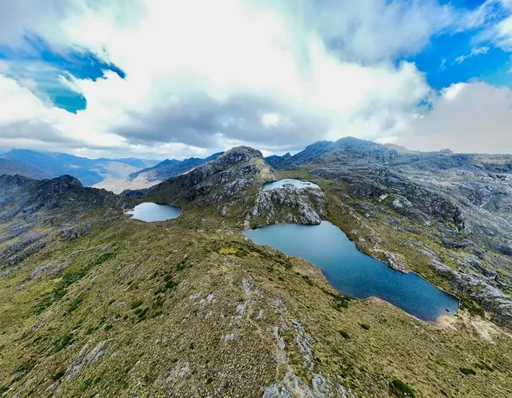
Carreteras de altura, valles que se llenan de nubes y cordilleras que aparecen cuando el cielo se abre.
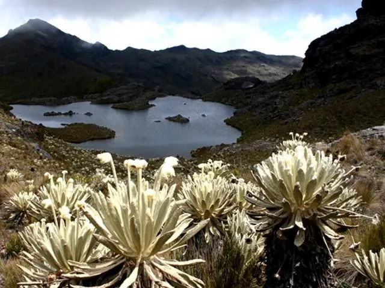
El páramo funciona como una esponja: retiene el agua de la niebla y la lluvia y la entrega poco a poco a quebradas y ríos. Los frailejones crecen muy despacio, por eso se miran sin tocarlos y se camina por los senderos marcados.
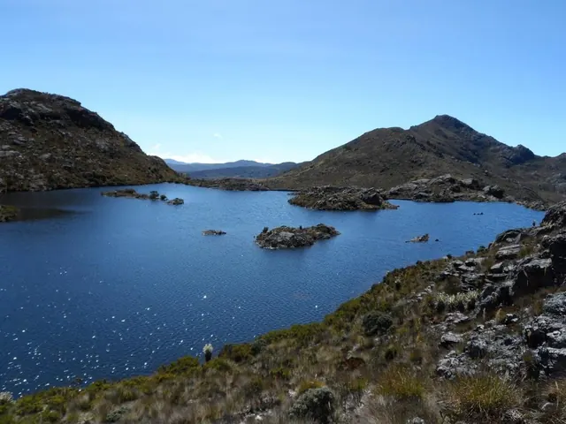
Agua quieta entre roca y pajonal. Publicaremos nombres, rutas y condiciones de acceso solo cuando los confirmemos con guías locales y la autoridad ambiental.
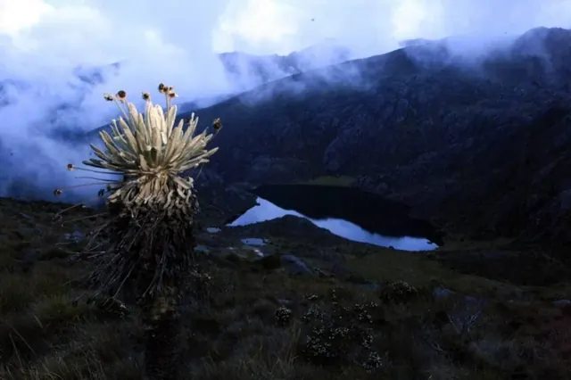
En la montaña la luz cambia rápido: una ladera gris se vuelve dorada en minutos. Madrugar suele tener premio.
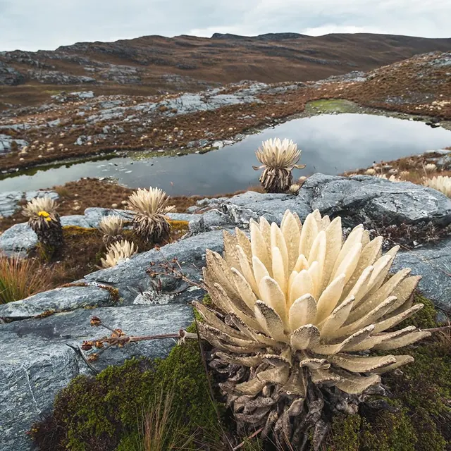
Rocío sobre las hojas, musgo en la roca, nubes que pasan a ras del suelo. Lleva cámara o simplemente mira.
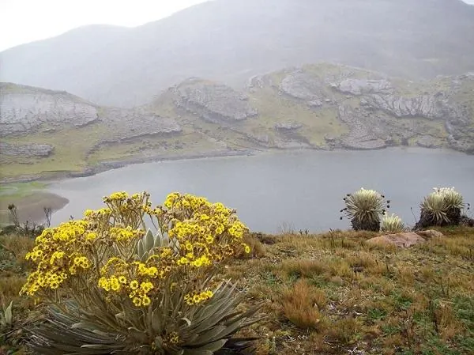
No nombramos especies que no hayamos identificado. Si quieres saber qué estás viendo, un guía local o la CDMB son las mejores fuentes.
Fichas con lo que sabemos de cada lugar y de dónde lo sabemos. Lo que aún no está confirmado queda indicado.
Ninguna actividad externa está incluida en el alojamiento. Cada ficha indica si se hace en la cabaña o si hay que salir.
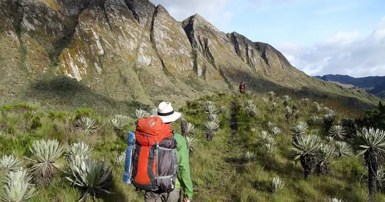
Saliendo de la cabaña
Desde paseos cortos para ver frailejones hasta jornadas largas hacia las lagunas. En el páramo se camina por rutas autorizadas y, si no conoces el terreno, con guía local. El nivel de cada ruta se confirmará con fuentes locales antes de publicarlo.
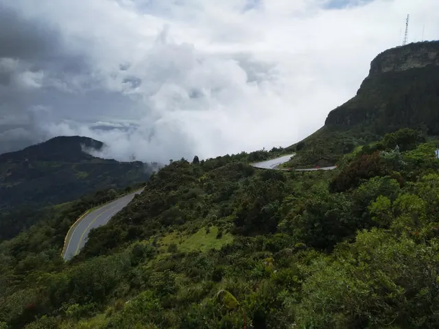
Saliendo de la cabaña
La subida a El Picacho por la Ruta 66 es un clásico de los ciclistas de Bucaramanga. Es una carretera nacional que se comparte con carros y camiones: usa luces, casco y ropa visible, y ten en cuenta la niebla.
Sobre El Picacho (Wikipedia, en inglés)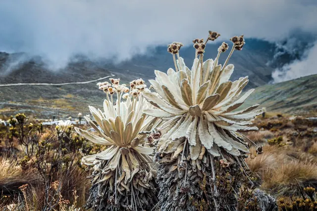
Dentro y fuera
Nubes, cumbres y vegetación de alta montaña. Las mejores luces suelen estar temprano en la mañana.
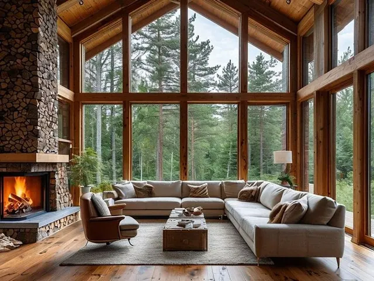
En la cabaña
Un libro, una bebida caliente, una conversación larga. Sin agenda.
Saliendo de la cabaña
Conoce el pueblo, su comercio y los cultivos de la alta montaña. Otros pueblos cercanos se sumarán cuando confirmemos que son una salida razonable desde la cabaña.
Por confirmar
Se publica solo si se confirman rutas adecuadas y accesibles en la zona.
Por confirmar
Se publica solo si existe un espacio adecuado y seguro, con nombre y ubicación verificados.
Cinco formas de vivir la cabaña. Son ideas para inspirarte, no paquetes con servicios incluidos: cuéntanos cuál te interesa y te respondemos con disponibilidad y tarifa.
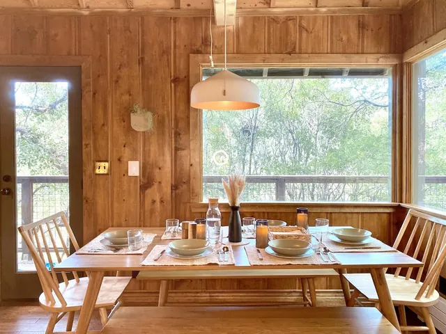
Plan familiar
Comidas largas, juegos de mesa en la sala y salidas cortas para que los niños conozcan un frailejón de cerca. Exploración a la medida de las edades del grupo.
Plan romántico
Silencio, paisaje y tiempo para ustedes. Un café en la mañana fría, una caminata sin prisa y una noche tranquila lejos de la ciudad.
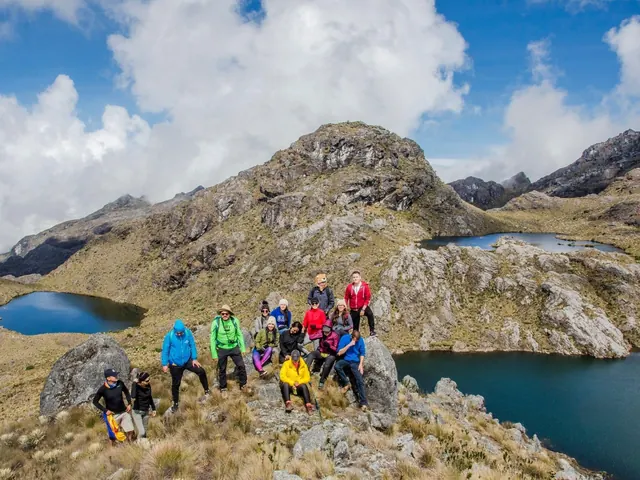
Plan de amigos
Conversaciones hasta tarde, la foto del grupo en la montaña y una salida para conocer la región. Todo dentro de las normas de la cabaña.
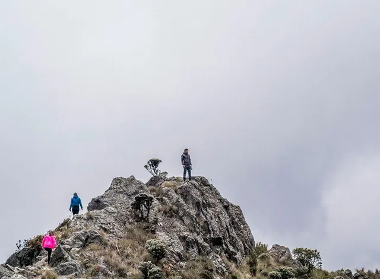
Plan de aventura
Senderismo de páramo, la subida en bicicleta a El Picacho y paisajes que se ganan con esfuerzo. Exploración responsable: dejar el páramo como lo encontraste.
Las actividades externas pueden requerir transporte, preparación física o guías independientes, y no están incluidas en el alojamiento.
Plan de descanso
Dormir bien, leer junto a la chimenea y mirar desde el balcón cómo pasa la niebla. El plan es no tener plan.
Cada foto indica si es ilustrativa o un paisaje de referencia. Las fotos reales de la cabaña y de Berlín se sumarán aquí.
Todavía no tenemos fotos de esta categoría. Las fotos reales de Berlín y sus alrededores se publicarán cuando contemos con su autor y permiso de uso.
¿Dudas sobre la llegada? Escríbenos
Ubicación exacta por confirmar
Mostraremos el mapa cuando tengamos las coordenadas verificadas de la cabaña. Mientras tanto, puedes ver la zona general.
Ver Berlín, Tona en Google MapsEs la zona general, no la ubicación de la cabaña.
Cuéntanos cómo quieres vivir la experiencia y te ayudaremos a consultar la disponibilidad.
Si tu pregunta no está aquí, escríbenos por WhatsApp.
Paisaje de referencia, lugar por confirmar